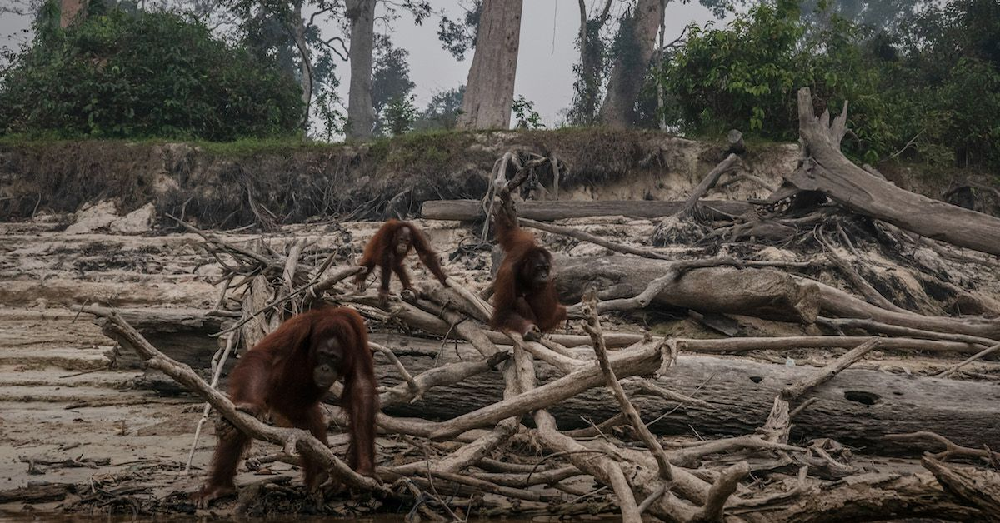
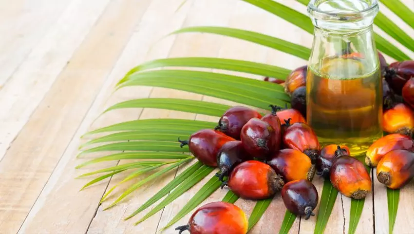

This is what happens when people decide to start Palm Oil production. It ruins the endangered animals habitat such as Orangutans, Sumatran Elephant, Bornean Pygmy Elephant, Sumatran Rhino, Sumatran tiger. All of these species of animals are critically endangered. Due to deforestation, 2.3% of trees and wildlife has been destroyed.
From 2015-2020 there have been 10 million trees removed from the earth. 90% of Palm Oil is produced in Malaysia and Indonesia. Only 8kg of Palm oil is used per year.
Palm oil is a fruit that comes from oil palms. It is used for cooking, in food products, detergents, cosmetics, and biofuel. It is high in matured fat that has been linked to heart disease. Its cultivation is destroying many rainforests, making it a huge threat to the climate, people and endangered species.

Instagram: anti.palm.oil.association